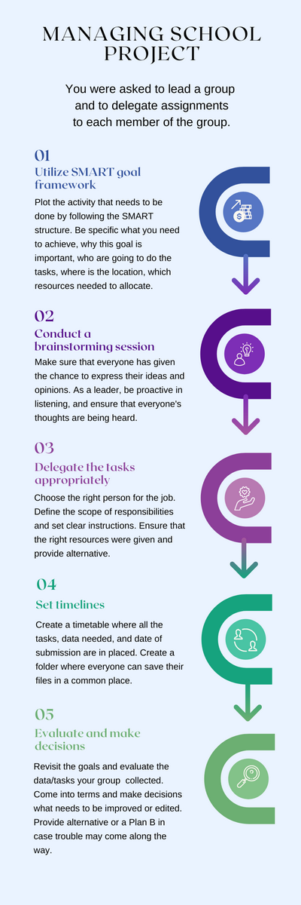

Making Decisions, and Setting Goals
Making Decisions
A process in which you make precise actions after planning and gathering relevant information in order to achieve a better outcome and minimize possible conflicts. It can also be described as a process to help decide what alternative steps to take after conducting an evaluation or assessment of the past activity to look for areas of improvement. This strategy is extremely important as it helps you realize what you intend to achieve. Making decision skill is something we need to enhance in our life as we are dealing challenges big or small in a day-to-day activity (Indeed Editorial team, 2021).
Setting Goals
This is the process of determining when something is deemed unsatisfactory and then set obtainable goals to achieve the main objective within a specified time frame. The best way to practice setting goals is using SMART criteria which ensures all necessary information are in place during the planning period to set clear understandings for people who will be working.
SMART stands for S- Specific where your goal should be sensible and significant, M- Measurable; goal is trackable, A- Attainable; the goal is possible, R- Realistic which means you know you or/and the team are capable of, and T- Time-bounded setting the deadline. Setting goal is important in communication approach as it imprints your vision and fulfilling your plans on what to achieve (Mathers, C. 2022).
Example
In your class, you were appointed to lead an activity and tasked to delegate assignments to each member of the group. Using the setting goals and making decisions at once, you can easily facilitate what needs to be done according to the expected outcome.
Step 1:
Use SMART framework once you set goals. Be specific as to what you need to achieve, and should be able to answer the 5 Ws like why this goal is important, what do you want to accomplish, who are going to do the tasks, where is the location, which resources needed to allocate.
Step 2:
Hold a brainstorming session, ensure that everyone’s idea is valued.
Step 3:
Make decisions about who is going to do which specific job. Be considerate in giving the type of job to the person who possesses the right skills and abilities. It will make each task easy and more convenient to do. If one task is too difficult for just one member, create a small group to tackle the task together.
Step 4:
Set the deadlines, medium of communication for follow ups, and feedbacks. This ensures you are within the track of your project and building a good relationship with each member.
Step 5:
Consistently revisit your goals, evaluate, and make decisions as to what needs to be improved or edited. Provide alternative solutions or a plan B in case troubles may come along the way.